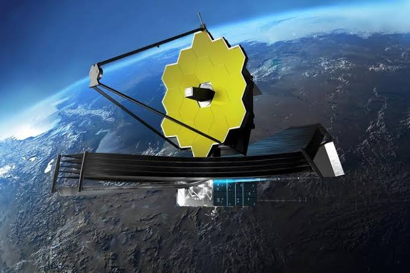
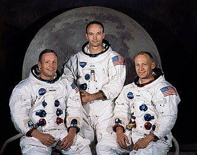
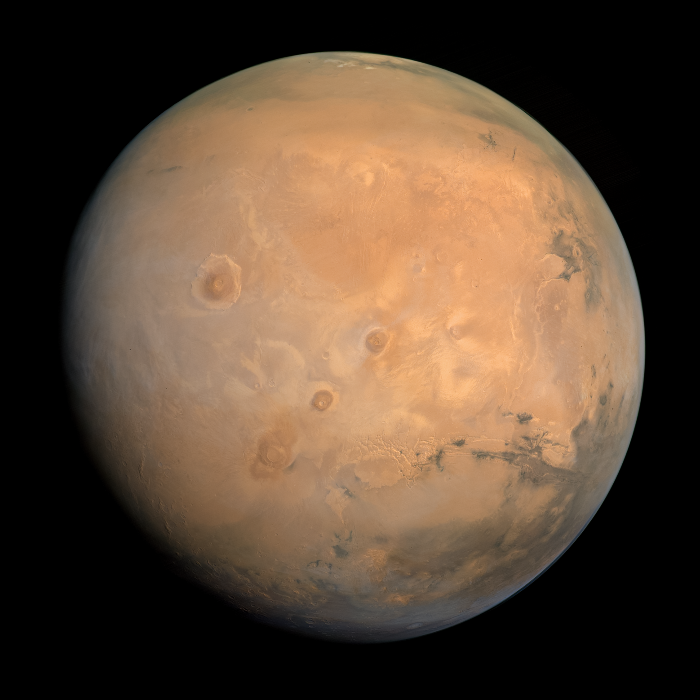
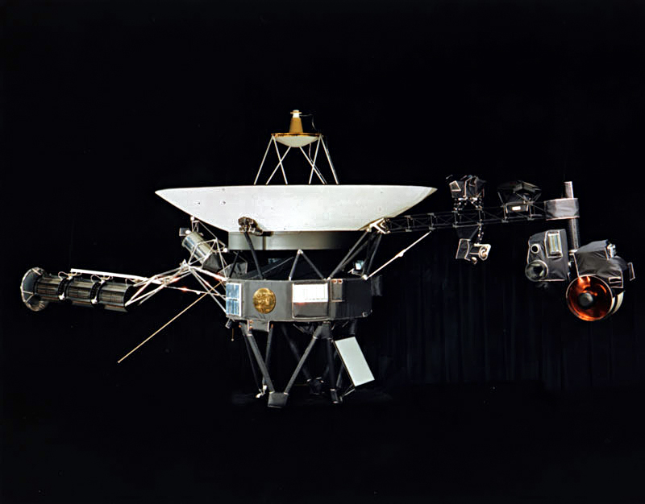
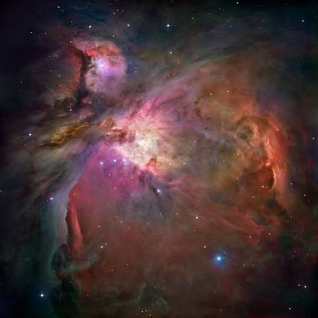

Telescópio James Webb
O observatório espacial mais potente já lançado, capaz de capturar luz infravermelha das galáxias mais antigas.

Missão Apollo 11
A histórica missão da NASA em 1969 que levou os primeiros seres humanos à superfície da Lua.

Exploração de Marte
Conhecido como o Planeta Vermelho, Marte abriga rovers automatizados em busca de vestígios de vida passada.

Estação Espacial Internacional (ISS)
Um laboratório orbital habitado continuamente desde 2000, onde astronautas realizam experimentos em microgravidade.

Sonda Voyager 1
Lançada em 1977, é o objeto construído pelo homem mais distante da Terra, já tendo alcançado o espaço interestelar.

Nebulosa de Órion
Uma imensa nuvem de gás e poeira estelar localizada na constelação de Órion, famosa por ser um berçário estelar.